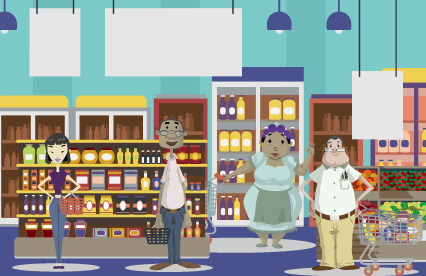
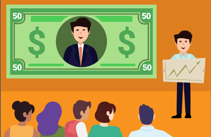

O que é Educação Financeira?
Educação financeira é o conjunto de conhecimentos e hábitos que ajudam uma pessoa a organizar melhor o seu dinheiro, tomar decisões conscientes e construir estabilidade ao longo do tempo. Não se trata apenas de ganhar mais, mas de saber como gastar, economizar e investir de forma equilibrada. Com uma boa educação financeira, é possível evitar dívidas desnecessárias, planejar objetivos futuros e ter mais segurança diante de imprevistos. Pequenas atitudes no dia a dia, como controlar gastos e definir prioridades, já fazem uma grande diferença na construção de uma vida financeira mais saudável.
Para facilitar esse processo, a educação financeira pode ser dividida em pilares essenciais, que ajudam a organizar melhor a forma como lidamos com o dinheiro. A seguir, você vai conhecer os quatro pilares que servem como base para uma vida financeira mais equilibrada.
“Não é sobre quanto você ganha, mas sobre como você administra.”

Pilar 1: Ganhar dinheiro
Ganhar dinheiro é o primeiro passo para construir uma vida financeira equilibrada. Isso pode vir de um salário, trabalhos extras ou outras fontes de renda. Mais importante do que apenas receber é buscar formas de aumentar seus ganhos ao longo do tempo, seja através de estudo, qualificação ou novas oportunidades. Quanto maior a sua capacidade de gerar renda, maiores serão as suas possibilidades de crescimento financeiro.
IDEIAS DE RENDA EXTRA
- Freelancer Online: Ofereça serviços de tradução, revisão, redação ou design em plataformas como Workana ou Fiverr.
- Aulas Particulares: Ensine instrumentos, idiomas ou reforço escolar, com potencial de ganhar mais de R$ 800/mês.
- Venda de Produtos Usados: Desapegue de roupas, eletrônicos ou móveis em plataformas como Enjoei ou OLX.
- Entregador de Aplicativos: Utilize seu carro ou moto para aumentar a renda no tempo livre com Uber ou entregas.
- Aluguel de Objetos: Alugue ferramentas, câmeras, drones ou equipamentos de camping que você não usa.
Pilar 2: Gastar dinheiro
Saber gastar é tão importante quanto ganhar. Muitas vezes, o problema financeiro não está na falta de dinheiro, mas na forma como ele é utilizado. Organizar despesas, evitar compras por impulso e priorizar o que realmente é necessário são atitudes essenciais. Quando você controla seus gastos, consegue evitar dívidas e manter sua vida financeira mais equilibrada
Pilar 3: Investir
Investir é fazer o dinheiro trabalhar para você. Em vez de deixar o dinheiro parado, ele pode gerar rendimentos ao longo do tempo. Existem diferentes tipos de investimentos* ligados ao CDI, desde os mais seguros até os mais arriscados, e a escolha depende dos seus objetivos. Começar, mesmo com pouco, já faz diferença ex: R$ 100,00 e ajuda a construir um futuro financeiro mais tranquilo.
*Nota: Se você está começando, vale buscar opções que se encaixem na sua realidade. Leia mais.Pilar 4: Proteger
Proteger o dinheiro é cuidar do que você já conquistou. Isso envolve ter uma reserva de emergência para imprevistos, evitar dívidas e pensar em segurança financeira a longo prazo. Também pode incluir seguros ou outras formas de proteção. Ter essa base traz mais tranquilidade e evita que situações esperadas inesperadas comprometam toda a sua vida financeira.
Indicações de cursos
| Gestão de Finanças Pessoais | "Eu e Meu Dinheiro" | Como investir em você |
|
 |
 |